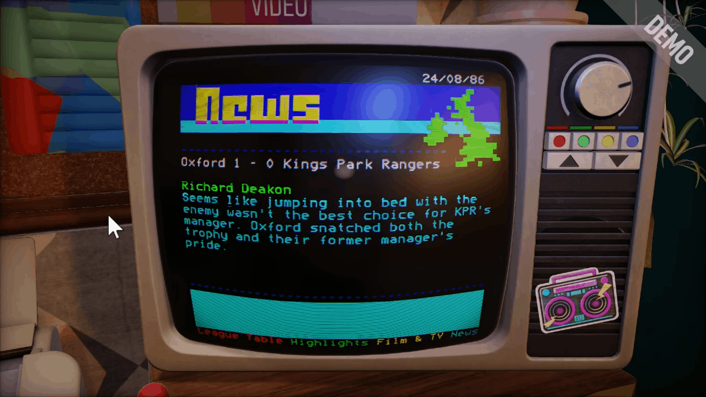
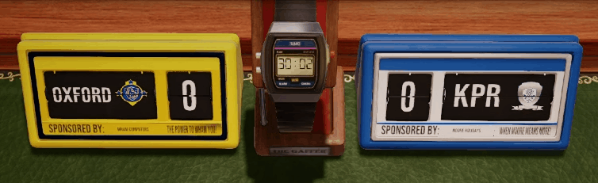
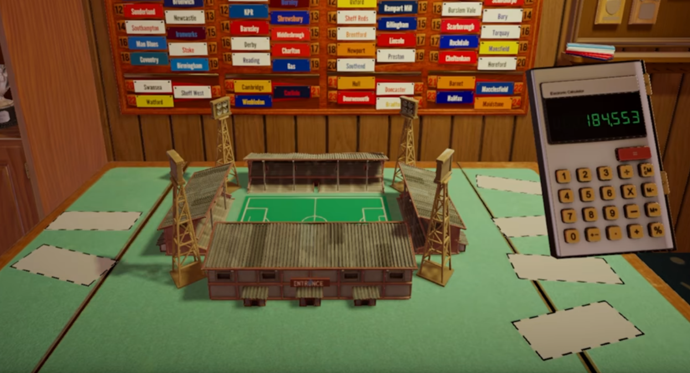
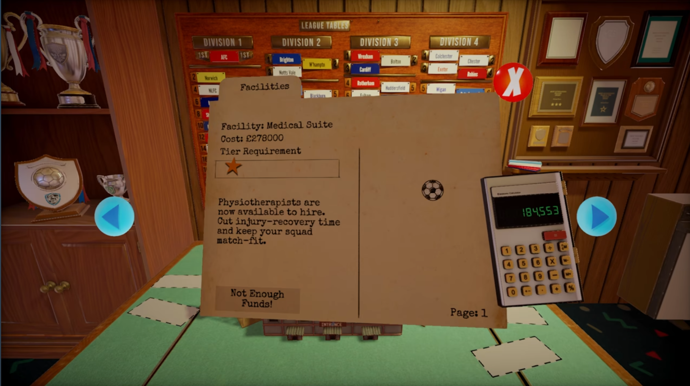
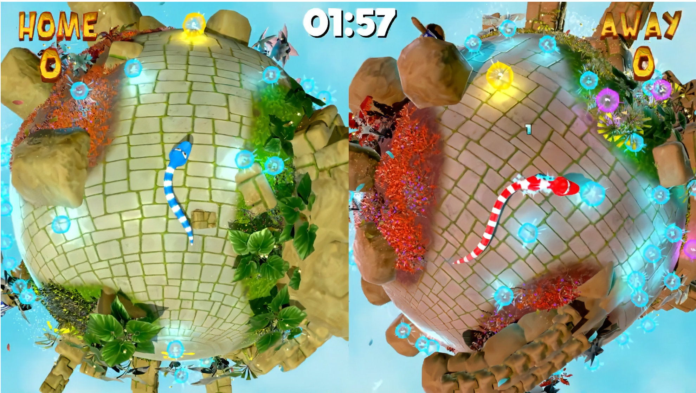
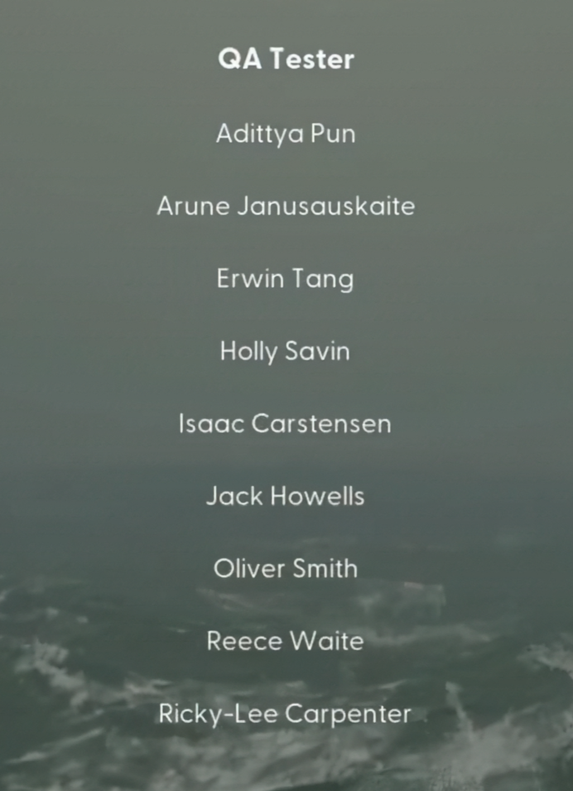
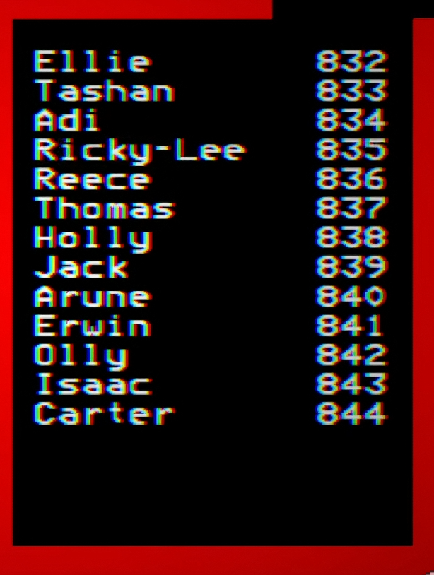

About Me
I’m a Junior Gameplay & Tools Programmer with commercial experience working on a
shipping title at Sumo Digital.
I completed a Level 7 Game Programming apprenticeship with Distinction and have
experience working in professional SCRUM environments alongside designers,
artists, writers, producers, and engineers.
My work focuses on gameplay systems, UI, tools, and presentation features,
with an emphasis on data-driven design and maintainable code. I’ve contributed
to both player-facing features and internal tools that improve iteration speed
for non-programmers.
I’m comfortable working within established studio pipelines, using Perforce
for version control, Microsoft Azure DevOps for task tracking and bug reporting,
and Miro and Confluence for documentation and planning.
Outside of work, I enjoy game jams, woodworking, and writing DND one-shots.
Featured Projects

I worked as a Junior Programmer on NUTMEG!, a nostalgic football management game at Sumo Digital.
One of my favourite parts of this project was building systems that brought the retro TV aesthetic to life
while making life easier for our writers and artists:
CRT TV Shader & Teletext System

I created a custom CRT shader in HLSL featuring chromatic aberration, animated scanlines, vignette, and pixelation.
The goal was to nail that nostalgic 80s feel and really immerse players in the retro atmosphere.
I built a teletext rendering system that read actual TTI files and emulated them on surface materials.
To keep memory usage down, I designed the system to create one template per style and dynamically overwrite it
rather than storing multiple instances that we'd only see once.

I also implemented offscreen texture rendering for the flip-score clocks, which drew the correct number as the
animation completed. I used the offscreen texture to draw custom team colours on the clocks.
Python News Article Tool

I developed a Python tool using Tkinter to help our professional writers create in-game news articles quickly
and efficiently.
Dynamic Match Highlights System

Using std::format, I created an algorithm that analysed weekly match results and intelligently categorised them.
Data-Driven Stadium Leveling System

I built a stadium upgrade system where stands and facilities change as the player levels up.
Stadium Preview Tool (ImGui)

Facilities & Leveling Progression


I developed gameplay systems for this multiplayer party game developed for Sheffield Wednesday's halftime events,
using Play3D, a custom in-house C++ engine.
- Developed a juicy and satisfying orb-eating animation mechanic
- Implemented exciting orb loss animation
- Created suspenseful score reveal UI
- Implemented gameplay logic and state-driven game flow
Skills
Languages
C++ | Python | C# | HLSL
Engines / Frameworks
Unity | Unreal 5 | Custom In-House Engines (Play3D) | Playbuffer
Tools
Perforce | GitHub | Microsoft Azure DevOps | Miro | Confluence | RenderDoc | Vtune | PIX
Fields
Gameplay | Tools | UI Systems | Engine | Optimisation
Game Jam Projects
An arcade style venus fly trap bug eating game developed in 72 hours for Down2Jam 3.
A cheeky goblin collecting and turn-based battler developed in 72 hours for Ludum Dare 57.
Train up with minigames to fight the devil in 7 days developed in 72 hours for Down2Jam 2.
Manage doing the chores while playing your computer game developed in 72 hours for Ludum Dare 53.
QA Credits


Tested gameplay areas, identifying bugs and crashes and reporting them in Azure DevOps with clear repro steps.